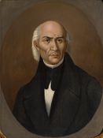
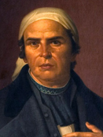
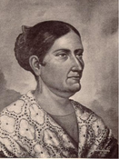
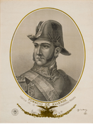
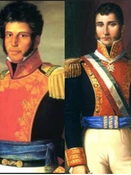

Miguel Hidalgo y Costilla
Sacerdote conocido como el "Padre de la Patria", quien dio el Grito de Dolores la madrugada del 16 de septiembre de 1810 para llamar a la lucha.
José María Morelos y Pavón
Sacerdote y militar que asumió el liderazgo del movimiento insurgente tras la muerte de Hidalgo, organizando al ejército y redactando Sentimientos de la Nación.
Josefa Ortíz Dominguez
Conocida como "La Corregidora", alertó a los insurgentes sobre el descubrimiento de la conspiración de Querétaro, acelerando el inicio de la lucha.
Ignacio Allende
Militar criollo y capitán del ejército que participó en la conspiración y secundó a Hidalgo en la primera etapa militar del movimiento.
Vicente Guerrero y Agustín de Iturbide
Encabezaron la entrada triunfal del Ejército Trigarante a la Ciudad de México el 27 de septiembre de 1821, marcando la consumación de la Independencia.